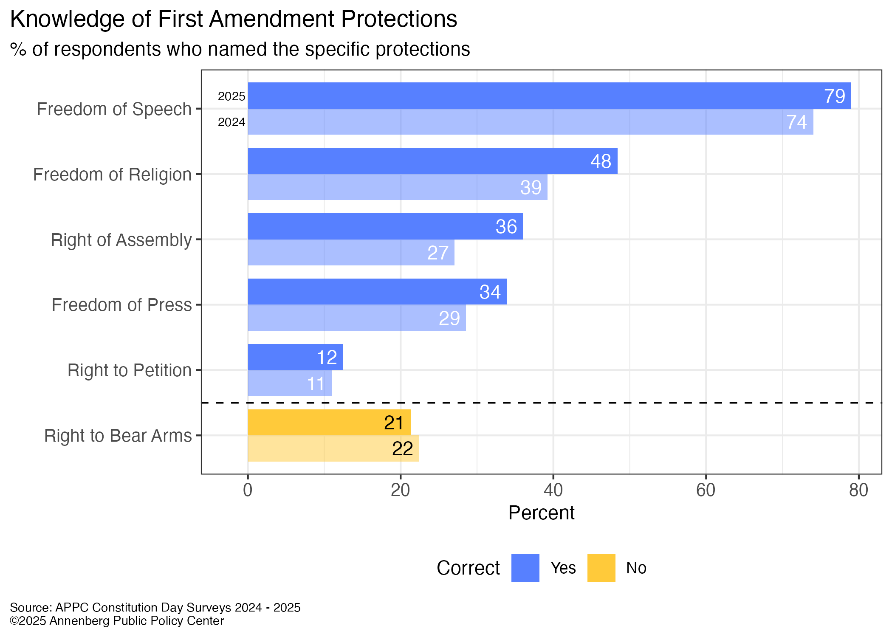

Bienvenido al sitio web Conoce tus Derechos para la Vida! En este año 2026, conocer tus derechos y libertades civiles te permite protegerte, por ejemplo, ejerciendo el derecho a guardar silencio; previene la injusticia al saber reconocer el trato injusto y te permite hacer valer tus derechos; y te permite tomar decisiones informadas al saber qué puedes y qué no puedes hacer dentro del marco legal. Conocer tus derechos contribuye a una sociedad más justa, ya que más personas son conscientes de lo que se puede y no se puede hacer, y garantiza el acceso a las necesidades básicas y a las oportunidades. A pesar de su gran importancia, varias encuestas, como la realizada por el Centro de Políticas Públicas Annenberg en 2025, muestran que muchas personas desconocen estas libertades fundamentales.
En el 2025, una ecuesta del Annenberg Public Policy Center estuvo publicada preguntando le a los participipantes los derechos que da la Primera Enmienda. The results were the following:

En el año 2026, es mas que importante ssaber y entender los derechos guarantisados en los Estados Unidos.
A pesar de ser establesidas hace 200 años being established 200 years ago, estos derechos civiles son importantes saber se en el dia de hoy..
Entonces es importante saber se estos derechos que pueden estar usars en tu dia diario.
Tambien es importante saber la importancia de estos derechos civiles.
Por todo este citio, usted va poder explorar sus derechos civiles y ejemplos en como se pueden usar en tu diario.